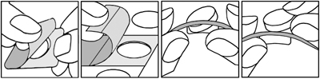

|
 |
| ИМОДИУМ® ЭКСПРЕСС (IMODIUM® EXPRESS) loperamide таб.-лиофилизат | ||||||
|
Клинико-фармакологическая группа: Противодиарейный препарат Номер и дата регистрации: П N016140/01 от 03.12.09 Код ATX: A07DA03 |
Владелец регистрационного удостоверения: зарегистрировано Представительство: | |||||
Форма выпуска, состав и упаковка ◊ Таблетки-лиофилизат белого или почти белого цвета, круглые; на одной стороне таблетки допускается наличие выпуклости по центру, неровной шероховатой поверхности и неровных истонченных краев таблетки; на другой стороне таблетки - фаска, допускается шероховатость поверхности.
Вспомогательные вещества: желатин, маннитол, аспартам, ароматизатор мятный, натрия гидрокарбонат. 6 шт. - блистеры (1) - пачки картонные. | ||||||
| ||||||
Описание препарата основано на официально утвержденной инструкции по применению и утверждено компанией-производителем для издания 2023 г. | ||||||
Фармакологическое действие |
Фармакокинетика |
Показания |
Режим дозирования |
Побочное действие |
Противопоказания |
Беременность и лактация |
Особые указания |
Передозировка |
Лекарственное взаимодействие |
Условия хранения и сроки годности |
Условия реализации
Фармакологическое действие
Лоперамид, связываясь с опиоидными рецепторами в стенке кишечника, подавляет высвобождение ацетилхолина и простагландинов, замедляя таким образом перистальтику и увеличивая время прохождения содержимого по кишечнику. Повышает тонус анального сфинктера, уменьшая тем самым недержание каловых масс и позывы на дефекацию. В результате клинического исследования были получены данные о том, что противодиарейный эффект наступает в течение одного часа после приема однократной дозы (4 мг). Фармакокинетика
Всасывание Большая часть лоперамида всасывается в кишечнике, но вследствие активного пресистемного метаболизма системная биодоступность составляет примерно 0.3%. Распределение Связывание лоперамида с белками плазмы (преимущественно с альбумином) составляет 95%. Метаболизм Лоперамид преимущественно метаболизируется в печени, конъюгируется и выделяется с желчью. Окислительное N-деметилирование является основным путем метаболизма лоперамида и осуществляется преимущественно при участии ингибитора изоферментов CYP3A4 и CYP2C8. Вследствие активного пресистемного метаболизма концентрация неизмененного лоперамида в плазме крови ничтожно мала. Данные доклинических исследований свидетельствуют о том, что лоперамид является субстратом P-гликопротеина. Выведение У человека Т1/2 лоперамида составляет в среднем 11 ч, варьируя от 9 до 14 ч. Неизмененный лоперамид и его метаболиты выводятся преимущественно с калом. Фармакокинетика у особых групп пациентов Фармакокинетические исследования у детей не проводились. Ожидается, что фармакокинетика лоперамида и его взаимодействие с другими лекарственными препаратами будут аналогичны таковым у взрослых. Показания
Режим дозирования
Внутрь. Таблетку кладут на язык, в течение нескольких секунд она растворяется, после чего ее проглатывают со слюной, не запивая водой. Взрослые и дети старше 6 лет Острая диарея: начальная доза - 2 таблетки (4 мг) для взрослых и 1 таблетка (2 мг) для детей, далее по 1 таблетке (2 мг) после каждого акта дефекации в случае жидкого стула. Хроническая диарея: начальная доза - 2 таблетки (4 мг)/сут для взрослых и 1 таблетке (2 мг) для детей; далее начальная доза должна быть скорректирована таким образом, чтобы частота нормального стула составляла 1–2 раза/сут, что обычно достигается при поддерживающей дозе от 1 до 6 таблеток (2–12 мг)/сут. Максимальная суточная доза не должна превышать 6 таблеток (12 мг); максимальная суточная доза у детей рассчитывается, исходя из массы тела (3 таблетки на 20 кг массы тела ребенка), но не должна превышать 6 таблеток (12 мг). При нормализации стула или при отсутствии стула более 12 ч препарат отменяют. Имодиум® Экспресс не применяют у детей в возрасте до 6 лет. При лечении пациентов пожилого возраста коррекция дозы не требуется. При лечении пациентов с нарушениями функции почек коррекция дозы не требуется. Хотя фармакокинетические данные у пациентов с печеночной недостаточностью отсутствуют, у таких больных Имодиум® Экспресс следует применять с осторожностью вследствие замедленного пресистемного метаболизма (см. раздел "Особые указания"). Указания по применению Поскольку таблетки-лиофилизат довольно хрупкие, во избежание повреждения их не следует продавливать сквозь фольгу. Для того чтобы достать таблетку из блистера необходимо выполнить следующие действия:
 Побочное действие
По данным клинических исследований Нежелательные реакции, наблюдавшиеся у ≥1% пациентов, принимавших Имодиум® Экспресс при острой диарее: головная боль, запор, метеоризм, тошнота, рвота. Нежелательные реакции, наблюдавшиеся у ≥1% пациентов, принимавших Имодиум® Экспресс при хронической диарее: головокружение, метеоризм, запор, тошнота. По данным постмаркетинговых исследований (спонтанных сообщений о нежелательных реакциях и клинических или эпидемиологических исследований) Нижеперечисленные нежелательные реакции классифицировали следующим образом: очень часто (≥10%), часто (≥1%, но <10%), нечасто (≥0.1%, но <1%), редко (≥0.01%, но <0.1%) и очень редко (<0.01%, включая единичные сообщения). Со стороны иммунной системы: редко - реакции гиперчувствительности, анафилактические реакции, включая анафилактический шок, и анафилактоидные реакции. Со стороны нервной системы: часто - головная боль, головокружение; нечасто - сонливость; редко - нарушение координации, угнетение сознания, гипертонус, потеря сознания, ступор. Со стороны органа зрения: редко - миоз. Со стороны ЖКТ: часто - запор, тошнота, метеоризм; нечасто - боль в животе, дискомфорт в области живота, сухость во рту, боль в эпигастральной области, рвота, диспепсия; редко - вздутие живота, кишечная непроходимость (в т.ч. паралитическая кишечная непроходимость), мегаколон (в т.ч. токсический мегаколон), глоссалгия. Со стороны кожи и подкожных тканей: нечасто - кожная сыпь; редко - ангионевротический отек, кожный зуд, крапивница, буллезная сыпь, включая синдром Стивенса-Джонсона, токсический эпидермальный некролиз и многоформную эритему. Со стороны почек и мочевыводящих путей: редко - задержка мочи. Общие расстройства: редко - утомляемость. Противопоказания
Имодиум® Экспресс нельзя применять в качестве основной терапии:
Имодиум® Экспресс не следует применять в случаях, когда замедление перистальтики нежелательно из-за возможного риска развития серьезных осложнений, в т.ч. кишечной непроходимости, мегаколона и токсического мегаколона. Имодиум® Экспресс следует немедленно отменить при появлении запора, вздутия живота или кишечной непроходимости. С осторожностью следует применять у пациентов с нарушениями функции печени вследствие замедленного пресистемного метаболизма. Применение при беременности и кормлении грудью
Имодиум® Экспресс не рекомендуется применять при беременности и в период грудного вскармливания. В случае диареи при беременности или кормлении грудью необходима консультация с лечащим врачом для назначения соответствующего лечения. Особые указания
Лечение диареи препаратом Имодиум® Экспресс носит только симптоматический характер. В тех случаях, когда возможно установить причину диареи, необходимо проводить соответствующую терапию. У пациентов с диареей, особенно у детей, может иметь место потеря жидкости и электролитов. В таких случаях необходимо проводить соответствующую заместительную терапию (восполнение жидкости и электролитов). Имодиум® Экспресс таблетки-лиофилизат содержат источник фенилаланина. Прием препарата больным фенилкетонурией противопоказан. При отсутствии эффекта после 2 сут лечения необходимо прекратить прием препарата, уточнить диагноз и исключить инфекционный генез диареи. Пациенты со СПИД, принимающие Имодиум® Экспресс для лечения диареи, должны прекратить прием препарата при первых признаках вздутия живота, а также признаках кишечной непроходимости. Поступали единичные сообщения о запоре с повышенным риском развития токсического мегаколона у пациентов со СПИД и инфекционным колитом вирусной и бактериальной этиологии, которым проводилась терапия лоперамидом. Имодиум® Экспресс необходимо применять с осторожностью у пациентов с печеночной недостаточностью, т.к. это может привести к токсическому воздействию на ЦНС вследствие относительной передозировки. Злоупотребление или неправильное применение лоперамида в качестве заменителя опиоидов описывали у лиц с опиоидной зависимостью. Сообщалось об удлинении интервала QT и развитии желудочковой аритмии, включая тахикардию по типу "пируэт", в связи с передозировкой лоперамида, в некоторых случаях со смертельным исходом. Имодиум® Экспресс не следует использовать в течение длительного периода времени без наблюдения врача, пациенты не должны превышать рекомендуемую дозу и/или рекомендуемую продолжительность лечения. Если лекарственное средство пришло в негодность или истек срок годности, не выбрасывайте его в сточные воды и на улицу. Поместите лекарственное средство в пакет и положите в мусорный контейнер. Эти меры помогут защитить окружающую среду. Влияние на способность к управлению транспортными средствами и механизмами В период лечения препаратом Имодиум® Экспресс следует воздержаться от управления транспортными средствами и занятий другими потенциально опасными видами деятельности, требующими повышенной концентрации внимания и быстроты психомоторных реакций, т.к. препарат может вызывать головокружение и другие побочные эффекты, которые могут влиять на указанные способности. Передозировка
Симптомы: при передозировке (в т.ч. при относительной передозировке вследствие нарушения функции печени) могут появиться задержка мочеиспускания, паралитическая кишечная непроходимость, запор, признаки угнетения ЦНС (угнетение дыхания, обструкция дыхательных путей, рвота с нарушением сознания, ступор, нарушение координации, сонливость, миоз, гипертонус мышц). Дети и пациенты с нарушением функции печени могут быть более чувствительны к влиянию лоперамида на ЦНС, чем взрослые. У лиц, преднамеренно принявших чрезмерную дозу (от 40 мг до 240 мг/сут) лоперамида гидрохлорида, отмечалось удлинение интервала QT и комплекса QRS и/или серьезные желудочковые аритмии, включая тахикардию типа "пируэт"; остановка сердца, обморок. Также описывались случаи смертельного исхода при преднамеренной передозировке. Злоупотребление, неправильное применение и/или передозировка высокими дозами лоперамида может привести к клиническому проявлению синдрома Бругада. Лечение: в случае передозировки необходимо начать ЭКГ-мониторинг для выявления удлинения интервала QT. При появлении симптомов передозировки в качестве антидота можно использовать налоксон. Поскольку длительность действия лоперамида больше, чем налоксона (1-3 ч), может потребоваться повторное применение налоксона. Поэтому необходимо тщательно наблюдать за состоянием пациента в течение не менее 48 ч с целью своевременного обнаружения признаков возможного угнетения ЦНС. В связи с тем, что тактика купирования передозировки постоянно изменяется, рекомендуется связаться с токсикологическим центром (при наличии) для получения наиболее актуальных рекомендаций по лечению передозировки. Лекарственное взаимодействие
По данным доклинических исследований лоперамид является субстратом P-гликопротеина. При одновременном применении лоперамида (однократно в дозе 16 мг) и хинидина или ритонавира, являющихся ингибиторами P-гликопротеина, концентрация лоперамида в плазме крови увеличилась в 2–3 раза. Клиническое значение описанного фармакокинетического взаимодействия с ингибиторами P-гликопротеина при применении лоперамида в рекомендованных дозах неизвестно. Одновременное применение лоперамида (однократно в дозе 4 мг) и итраконазола, ингибитора изофермента CYP3A4 и P-гликопротеина, привело к увеличению концентрации лоперамида в плазме крови в 3–4 раза. В этом же исследовании применение ингибитора изофермента CYP2C8, гемфиброзила, привело к увеличению концентрации лоперамида в плазме крови приблизительно в 2 раза. При применении комбинации итраконазола и гемфиброзила Cmax лоперамида в плазме крови увеличилась в 4 раза, а общая концентрация – в 13 раз. Это повышение не было связано с влиянием на ЦНС, что оценивалось по психомоторным тестам (т.е. субъективной оценке сонливости и тесту замены цифровых символов). Одновременное применение лоперамида (однократно в дозе 16 мг) и кетоконазола, ингибитора CYP3A4 и P-гликопротеина, привело к пятикратному повышению концентрации лоперамида в плазме крови. Это повышение не было связано с увеличением фармакодинамического действия, оцененного по величине зрачка. При одновременном пероральном приеме десмопрессина концентрация десмопрессина в плазме крови увеличилась в 3 раза, вероятно, из-за замедления моторики ЖКТ. Ожидается, что препараты со схожими фармакологическими свойствами могут усиливать действие лоперамида, а препараты, увеличивающие скорость прохождения через ЖКТ, могут уменьшать действие лоперамида. |
||||||
Вернуться наверх |
||||||
Copyright © Справочник Видаль «Лекарственные препараты в России», Москва, Россия